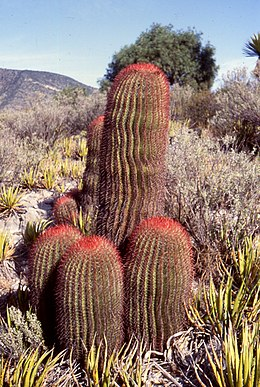

Megismerésük
- Az indiánok már legalább 9000 éve eszik a fügekaktuszok termését (tuna, kaktuszfüge, indián füge).
- Az Amerikában járt első utazók nem sokat foglalkoztak a kaktuszfélékkel; a történelem előtti idők növényóriásainak maradványának tekintették őket.
- Miután a szerzetesek eltanulták a bennszülöttektől, hogyan tehetik fogyaszthatóvá a kaktuszfügét, a XVI. század végén már európai kolostorkertekben is termesztették; a gyümölcs levét festésre is használták. A tunának Matthiolus olasz botanikus adott nevet: 1655-ben megjelent füvészkönyvében ő említi először Opuntia néven.